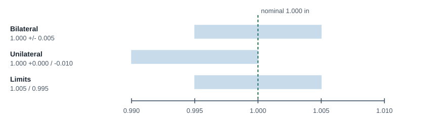
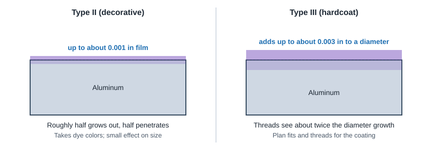

CNC Machining
Tolerances & Finishes
Use the shop's standard tolerance everywhere it works, tighten only the features that control fit or function, and remember that coatings change size.
Standard tolerances
- ±0.005 in (±0.13 mm) is the common default for metal features of size and location at quick-turn and network shops. A 1.000 in wide bracket will measure 0.995 to 1.005 in.
- ±0.002 in is a common precision option. ±0.001 in and tighter is possible with extra operations (reaming, boring, grinding) and costs more.
- Reamed holes can hold about ±0.0005 in; design them to a standard reamer size.
- Plastics: expect roughly double the metal tolerance. Plastics move with temperature, moisture and released stress.
- Tighter tolerances raise scrap, inspection and cycle time. A tight callout can more than double the part price.
General tolerances by part length (ISO 2768 style, metals)
| Part length | Orientation and form (flatness, straightness, perpendicularity...) | Angularity |
|---|---|---|
| 0 to 12 in | ±0.005 in | ±0.5° |
| 12 to 24 in | ±0.010 in | ±0.5° |
| 24 to 36 in | ±0.016 in (1/64) | ±1.0° |
| 36 to 60 in | ±0.031 in (1/32) | ±1.0° |
| Over 60 in | ±0.063 in (1/16) | ±1.0° |
Features of size and location default to ±0.005 in at this network shop. Plastic and composite parts typically get about double.
Writing tolerances

- Bilateral (1.000 ±0.005), unilateral (1.000 +0.000/-0.010) and limit (1.005/0.995) are all acceptable. Pick the one that best states the fit.
- Use three-place decimals for normal features (0.250, not 0.2500). An extra zero implies a tighter tolerance to many shops.
- Only tolerance what matters: mating bores, bearing fits, sealing faces, hole patterns. Leave everything else to the general note.
- Use a single datum scheme and dimension toleranced features from it, not from each other. See Datums.
- Send a 2D drawing with the 3D model when anything is tighter than standard, or when threads, inserts or finishes are specified.
GD&T basics
| Control | What it controls | Typical use |
|---|---|---|
| True position | Location of a hole or feature from datums, often with MMC/LMC bonus | Bolt patterns, dowel holes |
| Flatness | Surface must lie between two parallel planes | Sealing faces, thin plates that may warp |
| Cylindricity | Roundness and straightness together | Bearing bores, shafts |
| Concentricity / runout | Axis of one diameter relative to another | Shoulders, counterbores, turned steps |
| Perpendicularity | Squareness of a face or axis to a datum | Mounting faces, shoulders on shafts |
| Parallelism, profile, angularity, straightness | See ASME Y14.5 | As required by function |
Automated quoting systems generally route parts with GD&T or tighter-than-standard callouts to manual review. Expect a longer quote, a longer lead time and a 2D drawing requirement. CMM reports, FAI and material certs are available on request.
Surface roughness
| Surface | Typical as-machined | Notes |
|---|---|---|
| Flat and perpendicular milled faces | 63 µin Ra (1.6 µm) | Quick-turn standard |
| Curved / 3D surfaces | 125 µin Ra (3.2 µm) or better | Scallops from ball end mill passes |
| General as-machined spec | 125 µin Ra | Tool marks may show a swirl pattern |
| Turned diameters | Usually smoother than milled | Single-point turning on center |
Sharp edges are broken and deburred by default at many shops; note any edge that must stay sharp. Clear plastics come out matte or with swirl marks on machined faces.
Finishes and their effect on size

| Finish | Materials | Size effect | Use it for |
|---|---|---|---|
| As machined | All | None | Prototypes, internal parts |
| Bead blast | Metals | Negligible; softens edges | Uniform matte look, hides tool marks |
| Anodize Type II (MIL-A-8625 Type II) | Aluminum | Film up to about 0.001 in; roughly half is growth | Corrosion protection, dyed colors |
| Hardcoat Type III (MIL-A-8625 Type III) | Aluminum | Up to about 0.003 in on a diameter, about twice that on threads | Wear surfaces; plan fits for the growth |
| Chromate / chem film (MIL-DTL-5541) | Aluminum | Negligible | Conductive corrosion protection, paint base |
| Passivation | Stainless | None | Removes free iron, improves corrosion resistance |
| Bright nickel plating | Steel, brass, aluminum and others | About 0.00005 to 0.001 in | Decorative, corrosion and wear resistance |
| Electroless nickel | Most metals | Even thickness, including inside bores | Uniform coating on complex parts, wear |
| Zinc plating (ASTM B633) | Steel, iron | Thin | Corrosion protection; not above 500°F or in marine use |
| Black oxide | Steel | Negligible | Mild corrosion resistance, dark look |
| Powder coat | Conductive metals | Thick (several thousandths) | Durable color; mask threads and fits |
| Wet paint | Most | Thinner than powder | Color match, heat-sensitive parts |
- Threads and fits: tapped holes are often plugged during anodize, and quick-turn anodize may offer no masking. Call out masking for bores, threads and electrical contact areas on the drawing.
- Specify by standard (MIL, AMS, ASTM) and type/class. "Anodize black" alone leaves the shop guessing.
- Avoid multiple finishes on one part. Each extra finish or masked zone adds a process step and cost.
- Color matching is generally not available for anodize; specify a paint code if color must match.
ProtoLabs Definitive Guide to CNC Machining (tolerances, GD&T, roughness, finishes) · Xometry CNC Machining Design Guide (ISO 2768 general tolerances, standard finish) · ProtoLabs precision machining.